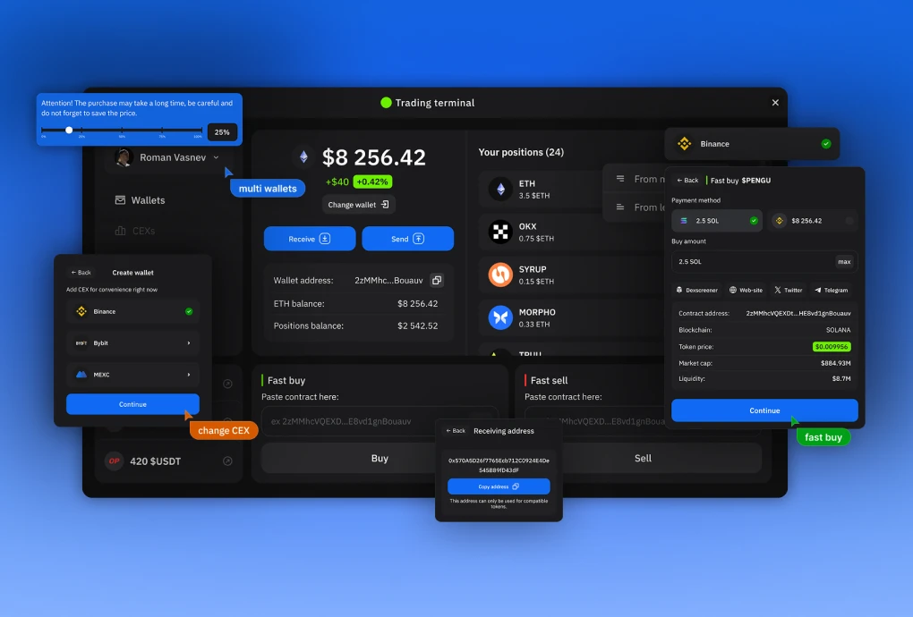

Транзакции без неожиданностей
Получение, покупка, отправка и обмен проходят через одинаковое подтверждение, а итог — один из понятных статусов: получено, отправлено, обменяно или ошибка со ссылкой в обозреватель блоков.

В Slothereum OS можно выпустить свой токен, торговать им в любой сети, обменивать токены между блокчейнами и покупать их прямо из Twitter. Главное — для этого не нужен криптокошелёк: достаточно аккаунта на бирже. Я спроектировал платформу целиком: структуру, сценарии, desktop, mobile и UI-kit.

Задача: собрать продукт, где всё — от выпуска токена до сделки — проходит в одном месте и не требует технических знаний.
Главное ограничение: пользователь должен торговать в любой сети, даже если у него нет криптокошелька, а есть только аккаунт на бирже.

Название собрано из SLO и Ethereum. Ленивец SLO высмеивает медленные транзакции в Ethereum и задаёт тон продукту: интерфейс серьёзный, характер — мемный. Каждый модуль оформлен как приложение на рабочем столе своей ОС.
Каждый модуль открывается как окно операционной системы — пользователь сразу понимает, где он и как вернуться.


Пользователь входит через биржу, которой уже пользуется — Binance, Bybit или MEXC, — и торгует сразу. Для каждой биржи есть подсказка, где взять API-ключи.


На регистрации биржу можно подключить сразу или пропустить. Порог входа ниже, а подключить её продукт предлагает позже — в момент, когда она действительно нужна.
API биржи работает иначе, чем кошелёк: сделка может исполняться дольше, а цена — сдвинуться. Поэтому подтверждение разведено на два флоу — человек всегда понимает, что произойдёт с его ордером.


Бот покупает, продаёт и обменивает токены в любых сетях по ответу на твит. Сделка идёт через подключённый кошелёк или биржу — торговать можно там, где идёт обсуждение. Логи и позиции бота видны в приложении.
Получение, покупка, отправка и обмен проходят через одинаковое подтверждение, а итог — один из понятных статусов: получено, отправлено, обменяно или ошибка со ссылкой в обозреватель блоков.
Название, тикер, настройки эмиссии и ликвидности — и токен сразу торгуется внутри экосистемы.

Кошелёк, лаунчпад и страница токена работают на mobile так же, как на desktop.

Каждый сценарий разложен по шагам — от QR-кода для получения до экрана статуса.

UI-kit собран по правилам React-вёрстки: rem-отступы, flex-компоненты, адаптивная логика. Поэтому Locofy.ai и Figma Tokens переводят макеты в чистый React-код с правильными размерами — у разработчиков меньше ручной работы и ошибок.

Лаунчпад, терминал, обмен, бот в Twitter и транзакции — на desktop и mobile, на одной системе, готовой к автоматической конвертации в React.
Чтобы человек начал торговать, ему не нужно разбираться в кошельках: достаточно биржи, которой он уже пользуется. Мемный характер сделал сложный финансовый продукт дружелюбным, а строгий UI-kit — быстро довёл его до кода.
Product design, UX/UI и UI-kit — Роман Васнёв. Маскот SLO — иллюстратор @Bloobell.